| 日付 | 2008年9月21日（日） - 2008年9月23日（火） | ||||||
|---|---|---|---|---|---|---|---|
| 山域 | 妙高周辺 | ||||||
| メンバー | 単独 | ||||||
| 山行形態 | 前夜発2泊3日テント泊 | ||||||
| アクセス | 電車、バス | ||||||
| ルート (Map) |
|
2日目
今日は4時に起きて5時に出発する予定だったが、
目を覚ますとテントをたたく激しい雨音…
すっかりやる気をなくし、泥だらけのテントを撤収して最短経路で下山することにする。
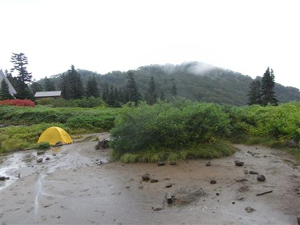
下山していると、続々と下から人が登ってくる。
皆、今日は晴予報だったのにと不満を言っている。明日は晴れるらしいという情報も。
明日も休みなので、気を持ち直してもう1日山中で様子を見てみることにする。
例え明日が雨でも失うものはテント場代の400円だけだ。
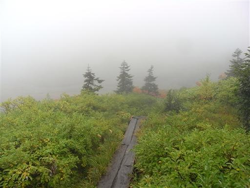
小雨が降る中、泥だらけのテントを張り直していると、
突然、真白だった視界から青空が現れる。
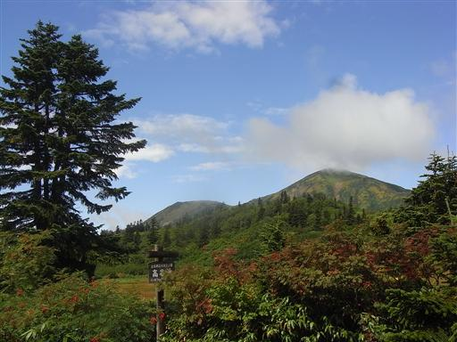
丸いドーム型の活火山、焼山もよく見えている。
今日は早朝から、雨の中20名近くの団体登山者が焼山に向かったそうだ。
ツアー登山らしいが、あの天気でよく出発する気になったものだ…

もう時間も遅いので遠出する気にはならないが、
明日歩く道の下見がてら、付近を散策することにする。
目の前には火打山が大きく聳えている。
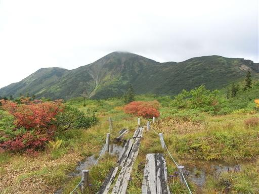
辺りにはたくさんの池塘が広がっている。
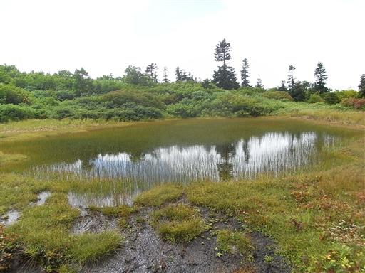
天狗ノ庭に到着。
この辺りの展望は非常にすばらしいが、少し雲が出てきた。
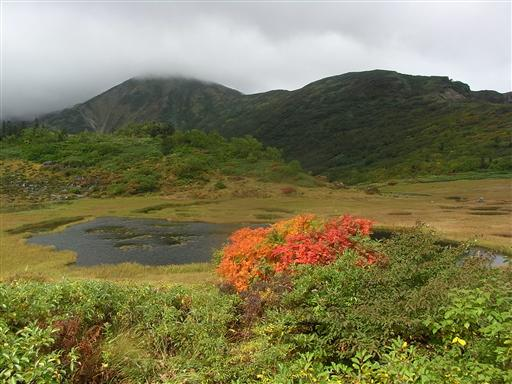
テント場に戻ってくる。雲が勢いよくやってきては、過ぎ去っていく。
明日は晴れそうだ。
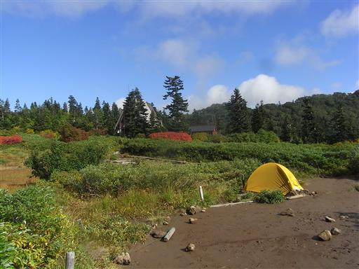
だいぶ雲も無くなってきたので、近くの展望台に行ってみる。
左に見えている山は高妻山。
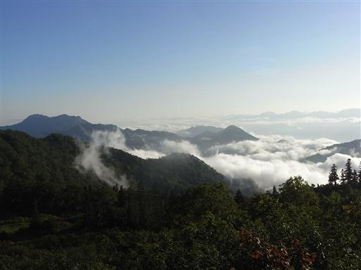
夕日が山の向こうに沈む。
朝日は何度も見たが、山で夕日を見たのは久しぶりだ。
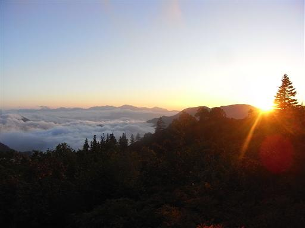
遠くに北アルプスの山並が見えている。
鹿島槍から五竜、唐松、白馬、雪倉まで後立山連峰の山々が連なっている。
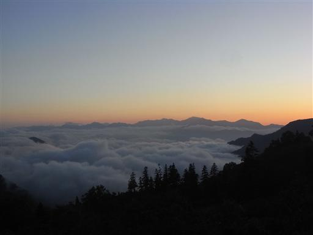
日が暮れたので、明日の早朝出発に備えテントに入る。
9時ごろに起き出して空を見てみると、ぼんやりと天の川が見えていた。
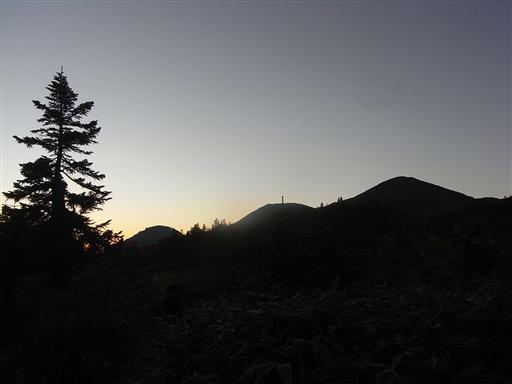